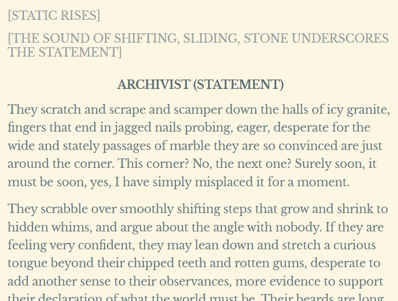
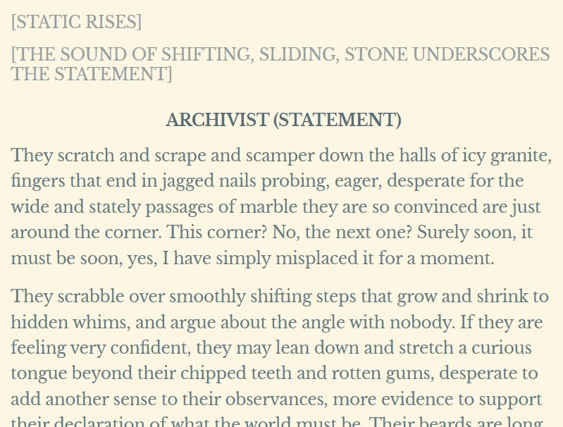
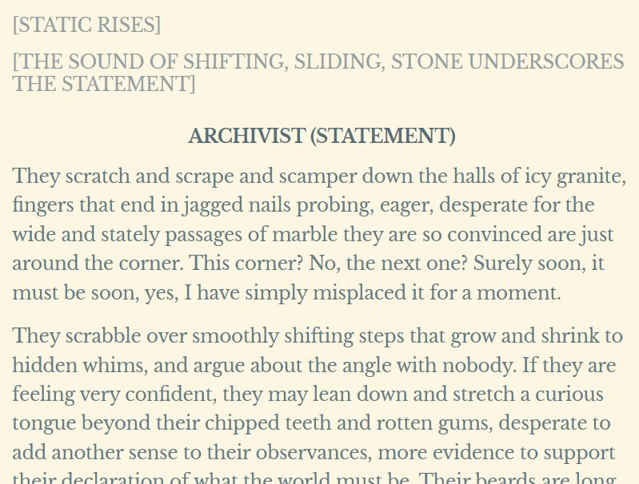

For this project, I will be comparing different seasons of a podcast called The
Magnus Archives (TMA) using Voyant Tool and AntConc. For a bit of context The Magnus
Archives is a horror podcast about what are seemingly indescribable horrors, the
central gimmick of the podcast is that it features "statements" by characters about
their experiences with these supernatural entities. As the podcast progresses it
becomes more plot-driven and focuses less on single-use statements, however they
remain present throughout the entire series. As such, I thought that it would be
interesting to analyze the series, season by season, to see what in total 672,146
total words were analyzed, with 20,377 different words in total. One thing to note
is that although this is a collection of every spoken word throughout the podcast
the transcripts also include stage/sound direction, and as such these notes are
transcribed differently depending on who is doing the transcription.
ANTCONC
Starting off by analyzing all 200 transcripts using 3 gram phrases we can get a
decent idea of the vibe of the podcast. Coming in strong with the phrase "i don t"
used 1437 times and "don t know" used 725 times, along with other phrases
communicating uncertainty, it becomes clear that this is a horror podcast
emphasizing the unknown.
Investigating further through viewing the ngrams in context we see a lot of I don't
know, think, want, or remember.
Looking at each season individually we see a lot of the same words reoccurring in
the top 15, however, their placements vary from season to season. I was surprised by
the lack of prominence of sound cue words, such as [tape clicks on] or
[click][click] Archivist, as those occur in almost every episode and yet only show
up in the top 15 3 times, and each time they do not place very high.
Top 15 3 grams from each season.
Voyant Tools
Due to the formatting of the podcast transcript, I have blacklisted character names
in Voyant, as not to skew the data. One implication of this is that it subtracts
every instance of the words "archivist" and "daisy."
Transcript from TMA episode 091 "The Coming Storm."
First looking at all 200 transcripts we get a basic word cloud that shows something
similar, but not the same. There are still occurrences of words like "don't,
"didn't," and "know," however, we now have more words such as "like" and "just."
This makes sense, as these are words that are used more colloquially, and as such
wouldn't come up as frequently in 3 gram phrases.
By not excluding names we can see that Jonathan Sims (Archivist) (the archivist)
speaks the most at 5338 occurences, Martin follows at 3715, and Basira at 1451.
By not excluding names we can see that Jonathan Sims (Archivist) (the archivist)
speaks the most at 5338 occurrences, Martin follows at 3715, and Basira at 1451.
Another interesting trend that I noticed was the graph tracking the usage of the
word "statement" over time. At the beginning of the series every statement starts
with a declaration of intent, whereas later on, mostly in the final season,
statements are simply implied and not explicitly declared.

Example of statement with and without introduction.
The graph slowly decreases as time goes on, however, it is worth noting that the
various fluxations occur for three primary reasons. The first reason was addressed
above, as many statements later on are undeclared. However, until the final season,
statements continue to be declared a great majority of the time, leaving two factors
to impact the trajectory of the graph below. The first factor is that as the story
continues some episodes do not feature statements at all, however, this is a rare
event, hence "statement" remaining in the top words throughout the series. The
second factor is that throughout the story the concept of a "statement" becomes more
relevant to the plot, and as such characters mention statements as a concept and not
as a declaration more and more throughout the story. These 3 factors combine to make
a graph with a downhill trend, but not entirely without uphill fluctuations.


 
